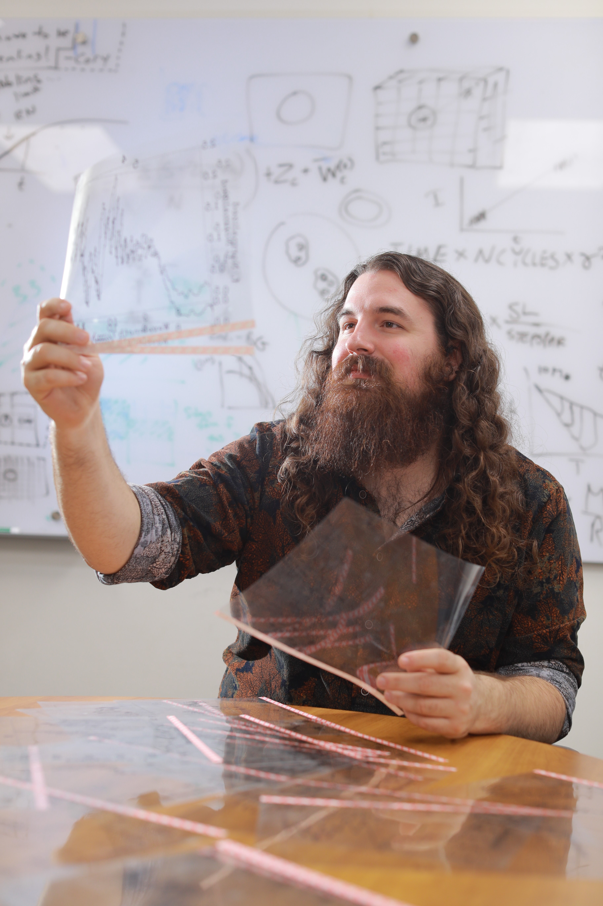

About Me
As a graduate student at UToledo, I work with Dr. Michael Cushing constraining the fundamental parameters of brown dwarf and planetary mass objects, determining the strange chemistry of their atmospheres, and probing the substellar mass function.
You can find a list of my publications via ADS.
I am also a burgeoning photographer, .